遊びで植物を育てよう
サントリーの四季なりイチゴ「らくなりイチゴ」を3年間育てました。
更新日 : 2024/10/12
サントリーの四季なりいちご「らくなりイチゴ」を買いました。
更新日 : 2021/04/10
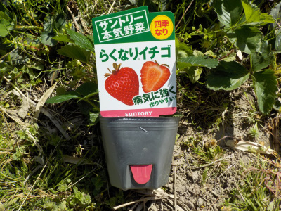
サントリーの本気野菜ってキャッチが、菅総理の働く内閣みたいです。
商品名「らくなりイチゴ」ってわかりやすいけど、ゆるいですね。
美味しいイチゴが出来るといいですが、期待していいのかな。
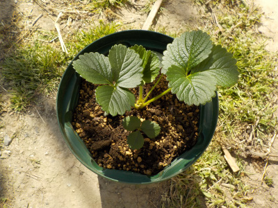
ポットから鉢に植替えしました。
本当はもっと大きいものに植え替えた方がいいみたいですが、いいサイズのものがありませんでした。
TOP > 果物 > イチゴ
らくなりイチゴの花が咲きました。遅いです。
更新日 : 2021/05/16

やっとらくなりイチゴの花が咲きました。
この苗を買うときに花付きと花無しがあって、花無しの方が茎が太かったのでこれにしたんですが、失敗だったかな。
同じ環境で育ってるんだから、花が先に咲いた方が成長がいいってことですよね。（たぶん）
1月以上前に花が咲いた苗を買っていれば、今頃はきっと育ったイチゴを食べてたんだろうな。
TOP > 果物 > イチゴ
サントリーらくなりイチゴを食べました。
更新日 : 2021/06/08
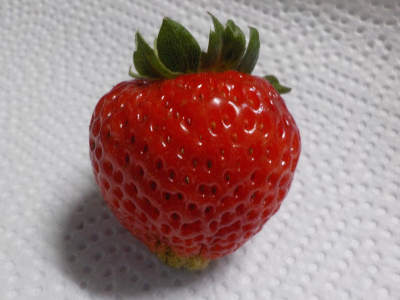
イチゴが赤くなったので食べました。
味の感想ですが、甘さが少なく爽やかな味でした。
そんなに甘くはないんだろうなと思っていたので、想定内です。
食べ方を工夫しようと思いました。
TOP > 果物 > イチゴ
イチゴに小さい花が咲いていました。
更新日 : 2021/07/10
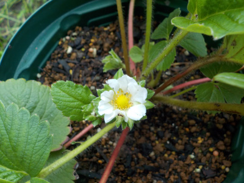
小さい花は実も小さいんだっろうな。
そして美味しくない。
でも、あまり変化のない苗なので小さくても花が咲いたこと自体はうれしいです。
そろそろライナーが出てくれないかな。
TOP > 果物 > イチゴ
夏のらくなりイチゴはあっさりした味でした。
更新日 : 2021/07/31
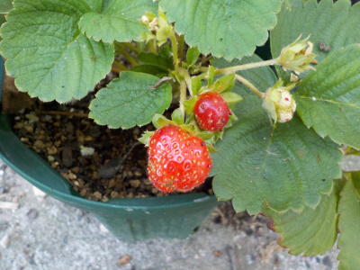
小さい実ですが、熟れたので食べてみました。
甘さ控えめのあっさりした味でした。
夏のイチゴなんてこんなものなのかな。
秋になったら美味しいイチゴが採れるといいんですが、どうでしょう。
今のところいいところがないサントリーのイチゴです。
TOP > 果物 > イチゴ
秋のらくなりイチゴが美味しかったです。
更新日 : 2021/10/23
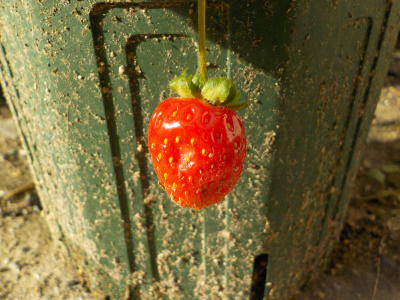
実が一つ出来てたので食べました。
甘くて美味しかったです。
沢山食べたいですがもうありません。
夏の暑さが心配で日陰に置いていたのが悪かったかな。
TOP > 果物 > イチゴ
イチゴは春が来たと思ったのかな？
更新日 : 2021/12/11
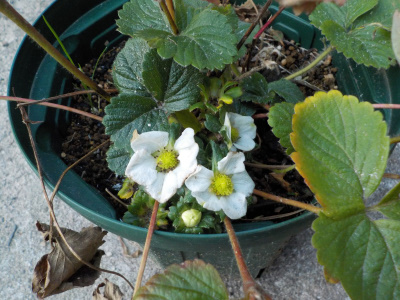
12月だけど暖かいので開花したようです。
この花は実になるんだろうか？
TOP > 果物 > イチゴ
イチゴの実が出来てるけど育つかな？
更新日 : 2022/03/13
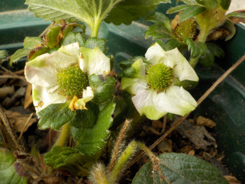
四季成りなのでいつ実が出来てもいいんでしょうね。
でも美味しく育つ気がしない。
TOP > 果物 > イチゴ
今年のらくなりイチゴは美味しかったです。
2022/05/08
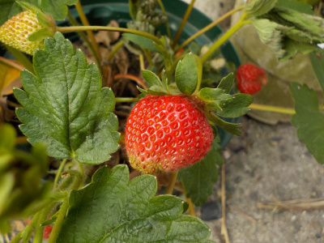
久しぶりに四季成りイチゴを収獲して食べました。
久しぶりなせいか、甘くて美味しかったです。果肉が硬かったですが、良く言えば歯ごたえがある、噛み心地がいい、果肉が詰まっている感じがしました。
これはこれで有りですね。去年はライナーが出なくて増やせなかったですが、今年は増やしたいです。
TOP > 果物 > イチゴ
らくなりイチゴを食べました。
更新日 : 2022/07/05
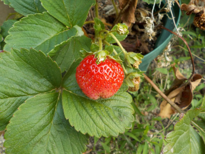
甘くなくて美味しくなかったです。
このイチゴは肥料を沢山やると美味しくなるとかあるのかな？
TOP > 果物 > イチゴ
小さいイチゴを２つ食べました。
更新日 : 2022/10/02
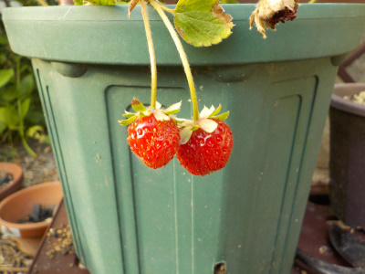
食べ頃なイチゴがあったので食べました。爽やかな甘さでした。
このイチゴは今年もランナーが出ていないです。このまま鉢で育てても弱っていくだけなんだろうな。地植出来る場所を探そうかな。
TOP > 果物 > イチゴ
11月ですが、暖かいせいかイチゴが出来ています。
2022/11/13
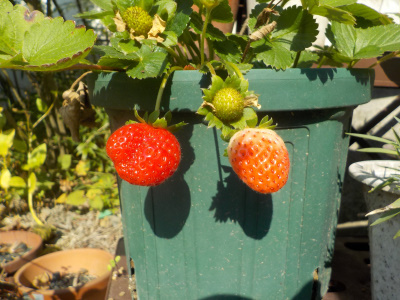
今年は今のところ暖かい日が多いので、イチゴが出来ています。
今ある青い実はさすがにもう育たないんだろうな。
TOP > 果物 > イチゴ
苺を摘んで食べました。
更新日 : 2023/05/05
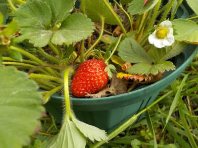
植木鉢のいちご実が赤くなっていたので、その場で食べました。
四季成り苺なので味は期待していませんでしたが、濃い味で美味しかったです。今までで一番美味しい。
状態良く育てれば、美味しい実が出来るってことかな。
TOP > 果物 > イチゴ
らくなりいちごが枯れました。
更新日 : 2024/10/12
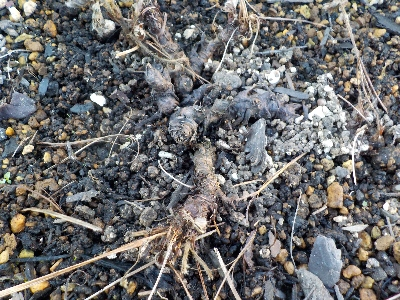
ちょっと前まで元気でしたが急に枯れました。秋の加湿と高温が原因かな？
3年くらい楽しめたので満足です。また苗を買おうかな。
四季なりイチゴを買うか、普通のイチゴを買うか迷うな。両方買ってもいいかな。
TOP > 果物 > イチゴ
苺は美味しい。沢山食べたい。
【おいしいものを食べよう。】【たくさん寝よう。】
【ソロ活をしよう!】【季節感のあることをしよう。】【動画視聴はほどほどに。】【当サイトの全てのコンテンツは無断転載禁止です。】